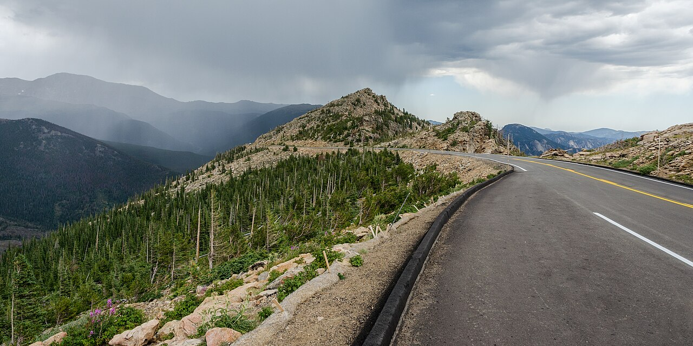

Rocky Mountain National Park from Estes Park · 5-day family itinerary
Five summer days for a nine-year-old and a six-year-old on the east side of Rocky Mountain National Park. The plan sleeps four nights in Estes Park, enters the park early, keeps every walk to about 1.6 miles (2.6 kilometres) or less, and has everyone back below the trees or in the car by noon, before the afternoon thunderstorms the park calls normal.

Photo: DXR, Trail Ridge Road, Rocky Mountains National Park, CC BY-SA 4.0, via Wikimedia Commons. Photographed on Trail Ridge Road (Day 3) on 24 August 2011, with rain cloud over the valley.

Checked before you commit
This illustrative route flies into Denver International Airport, sleeps four nights in Estes Park, spends a day each on Bear Lake Road, Trail Ridge Road and around Moraine Park and Sprague Lake, then drives back to the airport. We read the National Park Service (NPS) pages for directions, timed entry, fees, roads, shuttles, Bear Lake Road, weather, safety and Junior Rangers, and the National Weather Service (NWS) lightning pages, on 25 November 2026. Nothing was booked.
One base, east-side entrances only. NPS gives 66 miles (106 kilometres) and 1.5 to 2 hours from Denver to Estes Park via Boulder and US 36, and says there is no public transport from the airport to the park. Every park day here starts from the Beaver Meadows or Fall River Entrance, and no day crosses Trail Ridge Road to the west side.
Short walks, early starts, done by noon. The longest walk is Alberta Falls on Day 4, which NPS lists as 0.8 miles (1.2 kilometres) each way with 233 feet (71 metres) of climb. NPS says afternoon thunderstorms and wind are normal summer patterns on the alpine tundra; NWS says mountain storms typically develop in the early afternoon and advises being down by noon.
We didn’t check rooms in Estes Park, the hire car or flights. In 2026, NPS required a timed entry reservation from Recreation.gov for parts of each summer day, released at set times and not sold at the park; Days 2 and 4 need the Bear Lake Road version. A booking-hub link doesn’t hold a room, a car, a flight or a timed entry slot.
Planning boundary: dates are illustrative; the worked example runs Monday 19 to Friday 23 July 2027, counted from the flight in to the flight out. NPS says July and August days often reach the 70s or 80s °F (about 21 to 32°C) and drop into the 40s (about 4 to 9°C) at night, that it may snow at Bear Lake or on Trail Ridge Road even in July, and that the tundra can turn 10 to 20°F colder.
The timed entry rules, shuttle schedule and fees on this page are the ones NPS published for 2026; when we looked, it hadn’t posted the 2027 details, and its shuttle page said to check back in spring 2027. NPS says road status updates aren’t posted on its website because conditions change quickly. A booking-hub link doesn’t prove a booking.
Route and family-coordination brief
Party: two adults, a nine-year-old and a six-year-old. Base: four nights in Estes Park, the gateway town NPS names on the east side. Assumption: an ordinary hire car from the airport; we didn’t check rooms, hire terms or fares. NPS says a commercial shuttle runs from the airport to Estes Park, but that service wasn’t checked.
Entry rule (2026): NPS required a Timed Entry reservation to enter the park between 9 am and 2 pm, from 22 May to 12 October, and a Timed Entry+ Bear Lake Road reservation to enter the Bear Lake Road corridor between 5 am and 6 pm, to 18 October. Each gives a two-hour entry window; once in, you can stay as long as you like. Before 9 am or after 2 pm, the general park needed no reservation.
Release rule (2026): NPS released July reservations on Recreation.gov at 8 am Mountain Daylight Time on 1 June; by our conversion, that is midnight at the start of 2 June in Melbourne. More were released at 7 pm MDT the night before each date, and NPS warned they sell out quickly. The only charge was a non-refundable US$2 Recreation.gov processing fee.
Fee rule (2026): a park entrance pass is also needed. NPS listed a 7-day vehicle pass at US$35, sold at staffed entrance stations (card only) or on Recreation.gov, and said each non-US resident aged 16 and older must pay an extra US$100 unless admitted with an Annual or America the Beautiful pass. Check the current fees before you go.
Storm rule: NPS says to start walks early and plan to be below treeline or at shelter before a storm strikes. NWS says there is no safe place outside in a thunderstorm and that the only completely safe places are a building or a vehicle, not a tent or an open picnic shelter. If you hear thunder, head for the car or the shuttle, and wait 30 minutes after the last rumble.
Altitude rule: Bear Lake sits at 9,475 feet (2,888 metres) and the Alpine Visitor Center at 11,796 feet. NPS says high elevation raises the chance of dehydration, severe sunburn and mountain sickness (headache, nausea, dizziness). Drink plenty, reapply sunscreen, and go down to a lower elevation if anyone feels sick.
Trail rule: NPS says not to approach or feed wildlife, which is illegal in national parks, and that pets aren’t allowed on any trail, tundra or meadow. Near streams and falls, stay at least one body length back from the edge and keep a close eye on young children.
Left out: the west side and Grand Lake, which would mean crossing and recrossing Trail Ridge Road; Old Fall River Road, which NPS calls narrow, winding and unpaved; and longer walks from Bear Lake such as Dream Lake and Emerald Lake.
In Alfred, while the trip is still Planning, you can keep or change the hotel and then the flights Alfred picked, and browse the activity and meal carousels. Their Like toggles aren’t saved. We did not test whether city search offers Estes Park or Rocky Mountain National Park.
Day 1 — Fly into Denver, drive to Estes Park
Fly into Denver International Airport, which NPS calls the closest major airport, and collect the hire car. NPS says there is no public transport from the airport to the park.
Drive to Estes Park on the route NPS gives via Boulder: I-25 north to exit 217, then US 36, 66 miles (106 kilometres) and 1.5 to 2 hours. Drink plenty of water on the way up; NPS says high elevation raises the risk of dehydration.
If there is time, stop at the Beaver Meadows Visitor Center on US 36 near the Beaver Meadows Entrance, which NPS says is open all year, to pick up free Junior Ranger booklets (one for ages 6 to 8, one for 9 and up) and see the park film. Then check in and print or download your timed entry confirmations.
Fallback: if the flight lands late, skip the visitor centre and drive straight to your lodging; nothing inside the park is planned for today.
Live-check: visitor centre hours; your Day 2 and Day 4 Timed Entry+ Bear Lake Road confirmations; the NWS forecast for Bear Lake.
Day 2 — Bear Lake and Nymph Lake by shuttle
Use a Timed Entry+ Bear Lake Road reservation with an early window, such as the 7 to 9 am example NPS gives. Drive in through the Beaver Meadows Entrance and up Bear Lake Road to the Park & Ride, 5.2 miles from the junction, the largest car park on the road. In 2026, the free Bear Lake Shuttle ran from 6.30 am every 10 to 15 minutes, via Bierstadt Lake and Glacier Gorge to Bear Lake.
At 9,475 feet (2,888 metres), walk the Bear Lake Loop: 0.6 miles (1 kilometre) with 71 feet (22 metres) of climb, with views of Hallett Peak, according to NPS. Then walk on to Nymph Lake, 0.5 miles (0.8 kilometres) each way and 231 feet (70 metres) up. Turn back from Nymph Lake by late morning, whatever the sky looks like.
Take the shuttle back to the Park & Ride and drive down to Estes Park for lunch and a rest. Our recommendation: be at the shuttle stop by noon. NPS says that after leaving the Bear Lake Road corridor on a Timed Entry+ reservation, you can only re-enter after 2 pm.
Fallback: if you hear thunder on the trail, go straight back to the shuttle stop and board; NWS says a vehicle is a safe place, and a picnic shelter isn’t. If Nymph Lake trail is snowy or wet, keep to the Bear Lake Loop.
Live-check: NWS forecast for Bear Lake; the 2027 shuttle schedule; the trail conditions page.
Day 3 — Trail Ridge Road to the Alpine Visitor Center
Enter through the Beaver Meadows or Fall River Entrance before 9 am, when, under the 2026 rules, no timed entry reservation was needed. Trail Ridge Road climbs to 12,183 feet (3,713 metres), and NPS says 11 miles of it are above 11,500 feet, with few guardrails and no shoulders. Stop at Junior Ranger Headquarters at Hidden Valley, about 7 miles up the road, if it’s open.
Continue to the Alpine Visitor Center at Fall River Pass, 11,796 feet (3,595 metres) up. NPS calls it the highest visitor centre in the National Park System, with exhibits on the alpine tundra and Junior Ranger badges, and says it can close at any time because of weather. NPS says marmots are best seen on rocks along Trail Ridge, and that elk spend much of the summer at or above treeline.
Start back down by about 11 am, so the car is below treeline by noon, as NWS advises for mountain areas. Have lunch in Estes Park and keep the afternoon off the mountain.
Fallback: if the NWS forecast for Trail Ridge Road shows storms early in the day, or the road is closed, swap today with Day 4. If anyone has a headache, nausea or dizziness, NPS says to go down to a lower elevation.
Live-check: the Trail Ridge Road status line (970-586-1222) and the park’s variable message boards; the NWS forecast for Trail Ridge Road and the Alpine Visitor Center; visitor centre hours.
Day 4 — Moraine Park, Sprague Lake and Alberta Falls
Use a second Timed Entry+ Bear Lake Road reservation. Stop at the Moraine Park Discovery Center, 2 miles down Bear Lake Road, which NPS says is open from late May to early October, with wildlife exhibits and views of Longs Peak and the Continental Divide.
Drive on to the Park & Ride and take the Bear Lake Shuttle to Glacier Gorge, because NPS says that car park fills early. Walk to Alberta Falls: 0.8 miles (1.2 kilometres) each way and 233 feet (71 metres) up. At the falls, stay at least one body length back from the edge and keep children back from wet, slippery rocks, as NPS advises.
Ride back to the Park & Ride and drive to Sprague Lake for its 0.8-mile (1.3-kilometre) loop, which NPS says is wheelchair and stroller accessible, with benches, 27 picnic tables and, in summer, flush toilets. Eat lunch by noon, then head back to Estes Park.
Fallback: if storms are forecast early, skip Alberta Falls and keep to the Discovery Center and the Sprague Lake loop, both close to the car. If you hear thunder, go to the car; NWS says an open picnic shelter is not a safe place.
Live-check: NWS forecast for Bear Lake; Discovery Center hours; the trail conditions page.
Day 5 — Sheep Lakes, then Denver
Check out early and enter through the Fall River Entrance before 9 am. NPS says bighorn sheep are commonly seen near Sheep Lakes and Horseshoe Park from May to mid-August. Watch from a distance, and don’t approach or feed them.
Leave the park and drive back to Denver International Airport the way you came, via US 36 and Boulder: 66 miles (106 kilometres) and 1.5 to 2 hours, according to NPS. When we read it, NPS’s directions page warned of delays of up to 20 minutes on the US 34 alternative through the Big Thompson Canyon during construction. Book an afternoon or evening flight.
Return the hire car and fly out.
Fallback: if the sheep aren’t there, stop at the Fall River Visitor Center on US 34, which NPS says is open all year with wildlife exhibits, or leave straight away if the flight is early.
Live-check: your flight time; the car return time; Colorado Department of Transportation road conditions.
Planning notes
Related travel note: Lightning keeps an afternoon timetable.
Dates are illustrative. At decision time, recheck the NPS timed entry page for the 2027 rules and release dates, the shuttle page for the 2027 schedule, the fees page, the Trail Ridge Road status line (970-586-1222), the trail conditions page, Junior Ranger and visitor centre hours, the NWS forecasts for Bear Lake and Trail Ridge Road, your lodging, your hire car terms and your flight times.
Why one base. NPS names Estes Park as the park’s east-side gateway town; NPS puts the turn for Bear Lake Road about 0.2 miles from the Beaver Meadows Entrance, and Trail Ridge Road climbs from the same side. Every day in this plan starts and ends in the same town, and no day needs the west side.
Why early starts. Three reasons point the same way. NPS says the Bear Lake car park is often full by 9 am; in 2026, the general park needed no reservation before 9 am; and NPS and NWS both say summer storms in the mountains build in the afternoon. So every park day starts early and finishes high ground by noon.
What we couldn’t confirm. Whether NPS keeps the same timed entry system, windows and release dates in 2027; the 2027 shuttle schedule; summer hours for the Alpine Visitor Center, the Moraine Park Discovery Center and Junior Ranger Headquarters at Hidden Valley; and any drive time from Estes Park to the Alpine Visitor Center, which NPS doesn’t publish. Also not checked: lodging, food in the park, school holidays and sunset times.
Cold, wet and high. Pack warm layers, a rain jacket and gloves even in July, as NPS advises, plus water, food, sunscreen and the rest of the Ten Essentials. NPS says to expect winter hiking conditions above 9,000 feet in May and June; check the trail conditions page and turn back rather than cross water flowing over a trail.
Plan a trip
Start with your people, dates and pace, then review the editable plan before booking.
Plan a trip